geom_boxplot(mapping = NULL, data = NULL, stat = "boxplot", position = "dodge", outlier.colour = "black", outlier.shape = 19, outlier.size = 1.5, outlier.stroke = 0.5, notch = FALSE, notchwidth = 0.5, varwidth = FALSE, show.legend = NA, inherit.aes = TRUE, ...)stat_boxplot(mapping = NULL, data = NULL, geom = "boxplot", position = "dodge", na.rm = FALSE, coef = 1.5, show.legend = NA, inherit.aes = TRUE, ...)
aes or
aes_. If specified and inherit.aes = TRUE (the
default), is combined with the default mapping at the top level of the
plot. You only need to supply mapping if there isn't a mapping
defined for the plot.geom_point().geom_point().geom_point().geom_point().FALSE (default) make a standard box plot. If
TRUE, make a notched box plot. Notches are used to compare groups;
if the notches of two boxes do not overlap, this suggests that the medians
are significantly different.FALSE (default) make a standard box plot. If
TRUE, boxes are drawn with widths proportional to the
square-roots of the number of observations in the groups (possibly
weighted, using the weight aesthetic).NA, the default, includes if any aesthetics are mapped.
FALSE never includes, and TRUE always includes.FALSE, overrides the default aesthetics,
rather than combining with them. This is most useful for helper functions
that define both data and aesthetics and shouldn't inherit behaviour from
the default plot specification, e.g. borders.layer. There are
three types of arguments you can use here:
color = "red" or size = 3.
stat associated with the layer.
geom_boxplot and stat_boxplot.FALSE (the default), removes missing values with
a warning. If TRUE silently removes missing values.The lower and upper "hinges" correspond to the first and third quartiles
(the 25th and 75th percentiles). This differs slightly from the method used
by the boxplot function, and may be apparent with small samples.
See boxplot.stats for for more information on how hinge
positions are calculated for boxplot.
The upper whisker extends from the hinge to the highest value that is within 1.5 * IQR of the hinge, where IQR is the inter-quartile range, or distance between the first and third quartiles. The lower whisker extends from the hinge to the lowest value within 1.5 * IQR of the hinge. Data beyond the end of the whiskers are outliers and plotted as points (as specified by Tukey).
In a notched box plot, the notches extend 1.58 * IQR / sqrt(n).
This gives a roughly 95
See McGill et al. (1978) for more details.
geom_boxplot understands the following aesthetics (required aesthetics are in bold):
lower
middle
upper
x
ymax
ymin
alpha
colour
fill
linetype
outlier.colour
outlier.shape
outlier.size
outlier.stroke
shape
size
weight
McGill, R., Tukey, J. W. and Larsen, W. A. (1978) Variations of box plots. The American Statistician 32, 12-16.
p <- ggplot(mpg, aes(class, hwy)) p + geom_boxplot()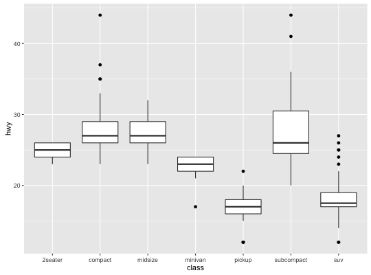
p + geom_boxplot() + geom_jitter(width = 0.2)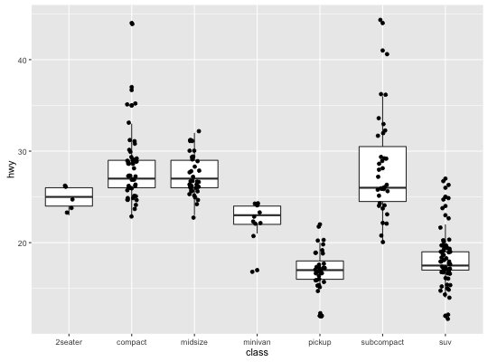
p + geom_boxplot() + coord_flip()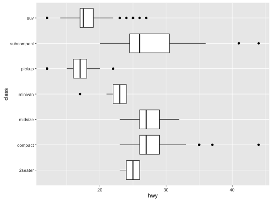
p + geom_boxplot(notch = TRUE)notch went outside hinges. Try setting notch=FALSE. notch went outside hinges. Try setting notch=FALSE.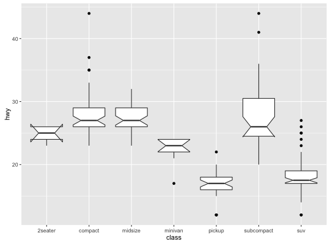
p + geom_boxplot(varwidth = TRUE)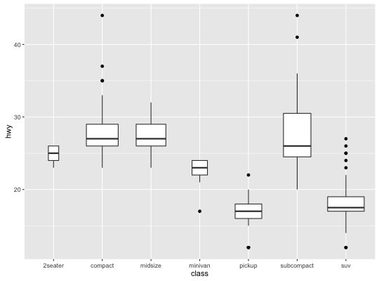
p + geom_boxplot(fill = "white", colour = "#3366FF")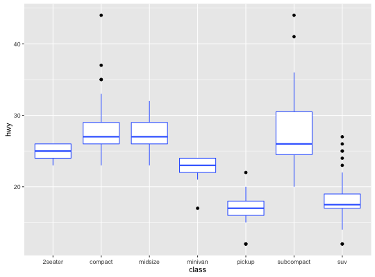
p + geom_boxplot(outlier.colour = "red", outlier.shape = 1)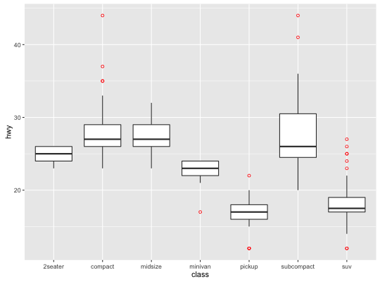
# Boxplots are automatically dodged when any aesthetic is a factor p + geom_boxplot(aes(fill = drv))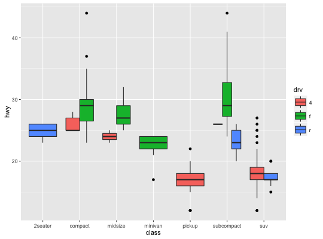
# You can also use boxplots with continuous x, as long as you supply # a grouping variable. cut_width is particularly useful ggplot(diamonds, aes(carat, price)) + geom_boxplot()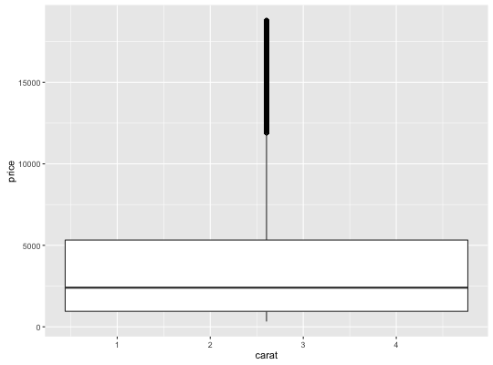
ggplot(diamonds, aes(carat, price)) + geom_boxplot(aes(group = cut_width(carat, 0.25)))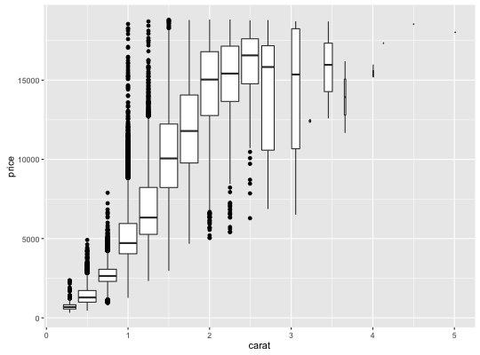
# It's possible to draw a boxplot with your own computations if you # use stat = "identity": y <- rnorm(100) df <- data.frame( x = 1, y0 = min(y), y25 = quantile(y, 0.25), y50 = median(y), y75 = quantile(y, 0.75), y100 = max(y) ) ggplot(df, aes(x)) + geom_boxplot( aes(ymin = y0, lower = y25, middle = y50, upper = y75, ymax = y100), stat = "identity" )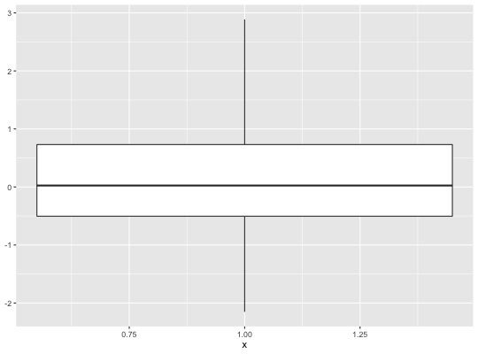
stat_quantile to view quantiles conditioned on a
continuous variable, geom_jitter for another way to look
at conditional distributions.